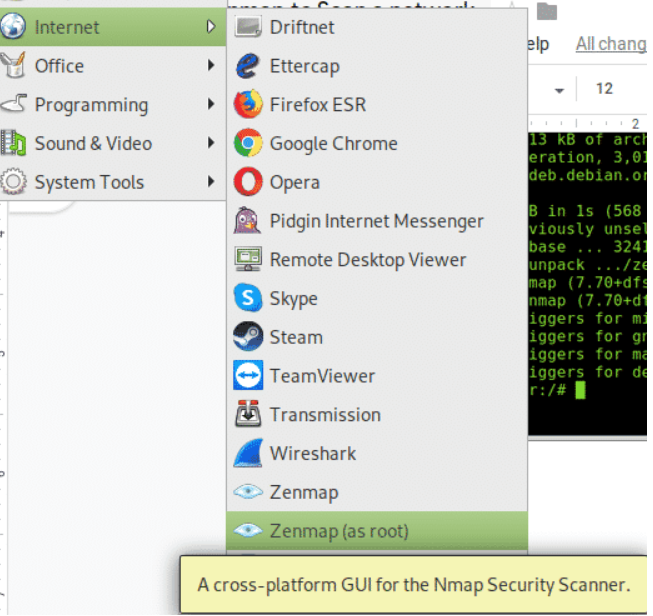
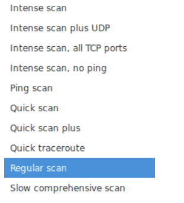
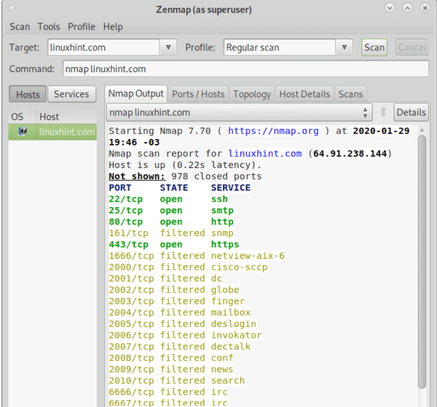
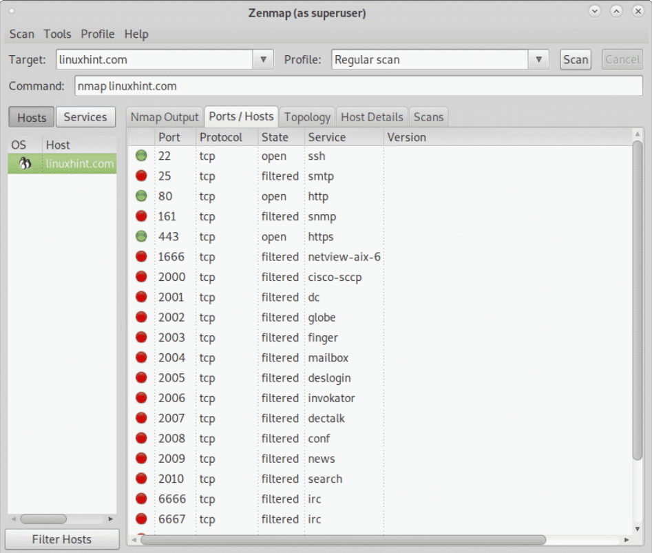
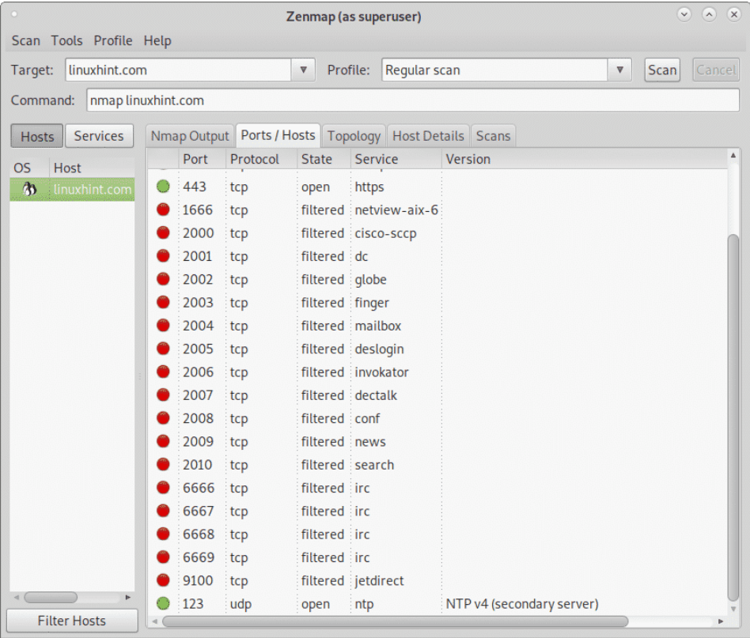
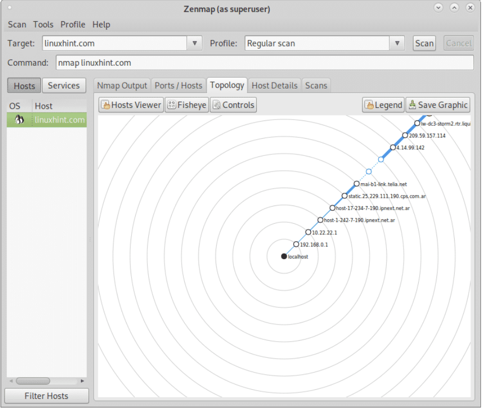
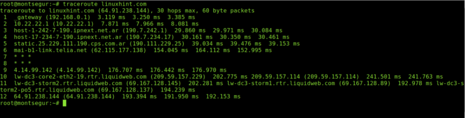
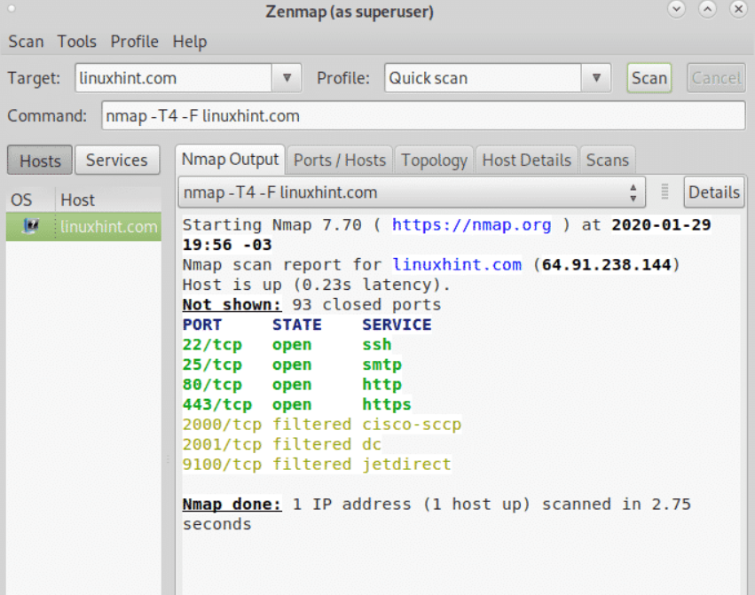
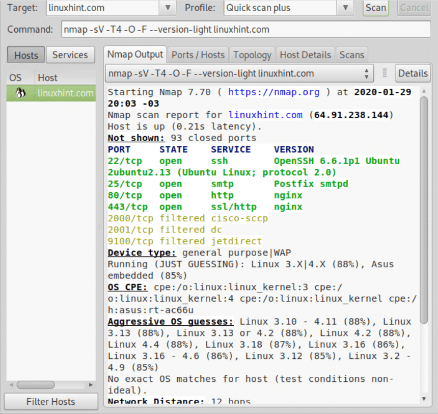
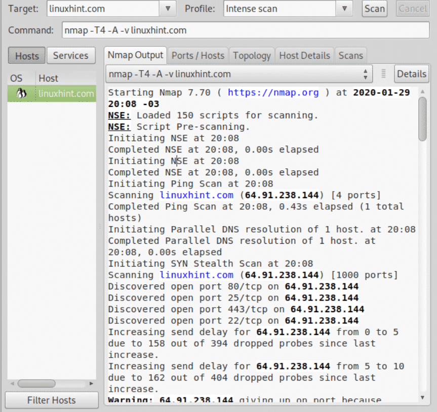

# apt install zenmap -y
Once installed you’ll find Zenmap on the apps menu, depending on the scan type you want to carry out it is recommended to run Zenmap as root, for example, Nmap SYN or raw scans requires special privileges to be executed.
Alternatively, you can run Zenmap from the console, but since a graphical interface is mandatory to get it installed this tutorial focused on graphical management.
Once executed you’ll see Zenmap main window including a drop down menu to select the profile. For the first example select the Regular Scan.
On the “Target” box, fill the field with the IP address, domain name, IP range or subnet to scan. Once selected, press on the “Scan” button, next to the drop down menu to select the desired Profile.
Below you will see the following tabs: Nmap Output, Ports / Hosts, Topology, Host Details and Scans. Where:
Nmap Output: this output shows the regular Nmap output, this is the default screen when running scans.
Ports / Hosts: this tab prints services or ports with additional information sorted by hosts, if a single host is selected then it will list the status of scanned ports.
Topology: this tab shows the path packets go through until reaching the target, in other words it shows the hops between us and the target similarly to a traceroute (see https://linuxhint.com/traceroute_nmap/) displaying the network structure based on the path.
Host Details: this tab prints the information on the scanned host as a tree. The information printed in this tab includes the host name and its OS, if its online or down, the status of the scanned ports, the uptime and more. It also display vulnerability estimation based on available services on the target.
Scans: this tab shows an history of all executed scans, including running scans, you can also add scans by importing a file.
The following screenshot shows the Ports / Hosts tab:
As you can see the screenshot above lists all ports, their protocol, their state and service, when available if instructed by the type of scan it will also print the software version running behind each port.
The next tab shows the Topology or traceroute:
You can check this tab displays the traceroute by running a traceroute against linuxhint.com, of course, despite this is not the case take in consideration traceroute results may variate depending on hops availability.
You can check this tab displays the traceroute by running a traceroute against linuxhint.com, of course, despite this is not the case take in consideration traceroute results may variate depending on hops availability.
lets check the Quick Scan mode by selecting it in the Profile drop down menu:
Once selected press on “Scan”. As you’ll see in the Command field you’ll see the flags -T4 and -F.
The -T4 refers to the timing template. Timing templates are:
The -F flag instructs Zenmap (and Nmap) to carry out a fast scan.
As you can see above, the result is shorter than the Regular scan, fewer ports were scanned and the result was ready after 2.75 seconds.
For the following example, on the Profile field select the intense scan, this time we will focus on the output. When selecting this type of scan you’ll notice, additionally to the -T4 flag the -A flag. The -A flag enables OS and version detection, script scanning and traceroute. The -v flag increases the verbosity of the output
